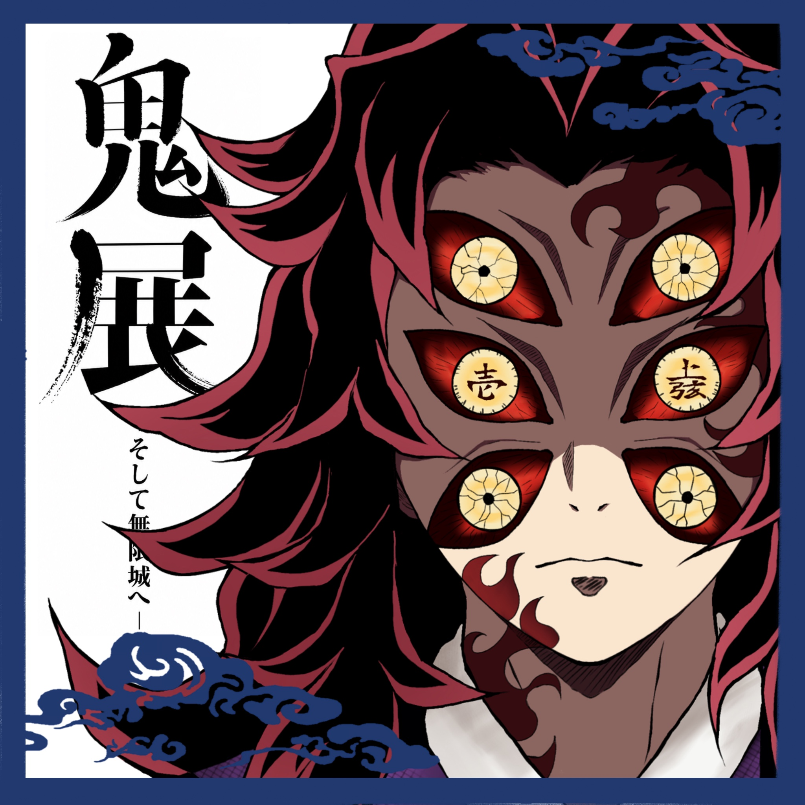
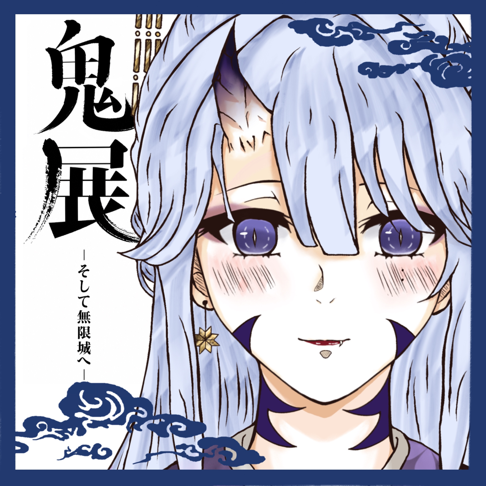

CHARACTERS
人物紹介

CHARACTER 01
黑死牟
出身：戰國時代・繼國家
活動範圍：日本
年齡：約 480 歲
星座：雙子座
身高 / 體重：190cm / 93kg
外貌設定
髮色：黑髮
眼睛：眼底為紅，瞳色為金
面部特徵：
• 六隻眼睛（中央眼刻有「壱」「上弦」字樣）
• 左額 → 右頸 → 右臉頰蔓延深紅火焰狀斑紋
氣質關鍵字：
冷峻、威嚴、撲克臉、高貴武士氣場、壓迫感極強
性格設定
表層性格：冷靜、寡言、極端自律、武士道信仰、階級觀念強、尊重實力
內在性格：極度自卑 + 極度自尊
對「才能」「天賦」有病態執著
一生都活在弟弟的影子下
情感壓抑、偏執、執念深重
致命缺陷：嫉妒、對失敗的恐懼、對死亡的逃避、不願接受「人類的極限」、遇到弱者會就地處決，絕不留後路

CHARACTER 02
篠宮 澪
年齡：外表18，實際未知
身高：165公分
髮色：銀白微藍，夜光下呈月光色，髮尾帶紫
瞳色：紫紺色
服飾：紫色主調的和服，和柄為櫻花小紋；腰帶為紺色
武器：太刀 ——《月影》
性格設定
外冷內熱，理性層面冷靜克制，情感層面極度深刻
她能將悲傷與痛苦藏於平靜的表情中
對他人疏離，對「信任之人」則完全放下防備
黑死牟就是她的「例外」
澪不會主動求愛，但她所有動作都洩露愛意：偷瞄、微紅、語氣放軟、下意識靠近
她不說「我喜歡」，但「我信任你」對她而言意義更重